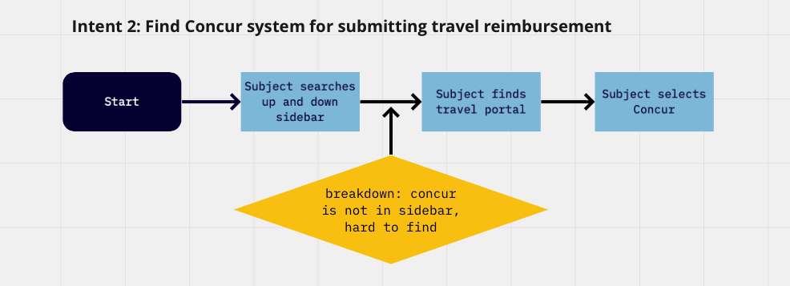
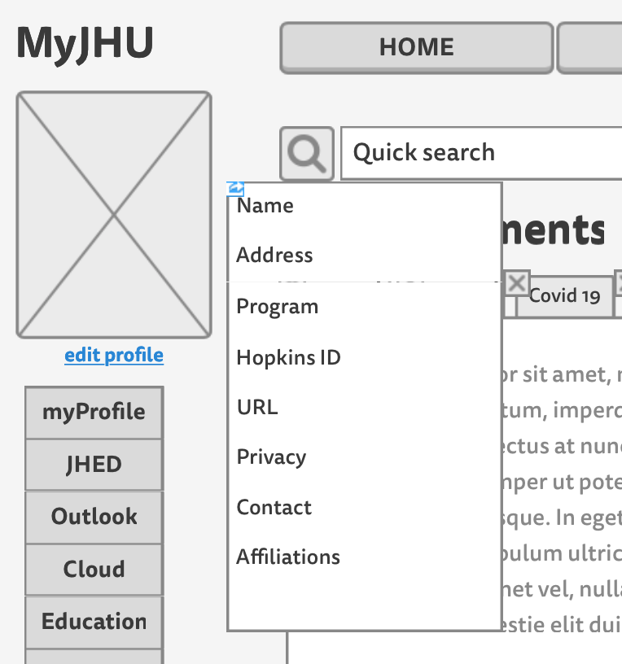

HCI Assignment 1
HCI Assignment 1: Improving basic functionality of myJHU
Graduate students at JHU are faced with a unique challenge of being both students and employees. This means navigating both the standard student-facing sites for registering for classes and checking grades, like SIS and Blackboard, but also employee interfaces such as ESS. Many of these interfaces are available throught the myJHU portal, but learning how to efficiently use the portal takes time. If there's one thing graduate students don't have, it's time to waste figuring out where to find different features in myJHU. While we agree that myJHU provides a valuable service as an aggregator and portal for the variety of services available to graduate students, the interface itself can be clunky and difficult to use. In this assignment, we will endeavour to redesign the interface, optimizing for customizability and speed.
Contextual inquiry
To this end, we performed a contextual inquiry to determine which interfaces were most in need of a redesign, and how actual users interact with myJHU.
Subject
For the purposes of this assignment, rather than recruiting a JHU graduate student, whose experience is colored by having used the interface many times before, we opted to recruit a non-JHU student who would act as a proxy for a brand new JHU graduate student using the interface for the first time.
Intents
Since myJHU is a fairly well-designed page to begin with, we opted to test more intents and narrow down what we would change later on, based on what we saw in our contextual inquiry. These intents were:
- Change profile name
- Find a book in the library
- Find Concur system for travel reimbursements
- Change what you see upon login
- Check email
Based on our inquiry, we opted to further analyze and re-design the page for intents 1, 3, and 4.
Contextual inquiry recording
Intent 1: Change profile name
Often, new students are assigned a profile with their full legal name, but have a different name that they go by. The following shows the sequential model of our subject attempting to change her name in myJHU:

Results
While the subject was able to find the functions to change the profile easily enough, the save button was all the way at the bottom and took time to find. Another time-waster was two-factor authetication, but for security reasons, this understandably cannot be removed.
Intent 2: Find Concur
Concur is only one of the services available to grad students through myJHU, which we use as a proxy for finding services in general.

Results
Concur is buried under the "Travel" option in the sidebar, which the subject had to spend some time visually searching for on the screen. Given just the name (not knowing it is used for travel) it would be very difficult to find.
Intent 3: Customize Layout
The front page of myJHU has news and alerts about various topics at JHU and is spread out over a large area. Students should be able to customize what they see based on what they value.

Results
This turned out to be an impossible task. The subject first went down an incorrect path, assuming that the customization would be part of myProfile. After that, the subject tried to use the "configure" option, which only changes the sidebar. Finally, the subject gave up.
Redesign
To address the breakdowns in the previous section, we propose a new, more compact site designed in Mockingbird:

Intent 1: Profile changes
We add a quick-link to change the profile directly under the profile picture. This opens a pop-out menu with the options of fields to change in the profile. 
Opening one of these menus changes the content of the pop-out to a list of editable fields. Contents can be discarded with the close button or saved with the large "confirm" button. 
These popups allow the user to stay on the same page while updating their information, and update only small parts of their info at a time. The small size of the interface places the "confirm" directly in the subject's view, where before it required a large amount of scrolling to get to.
Intent 2: Open Concur
Rather than forcing the user to use the sidebar, we include a large searchar which can be quickly accessed. As the user types, results begin to be filtered in a quick-search style, until only the top result remains.

This interface cuts down on time wasted scrolling over the sidebar and attempting to deduce under which heading different services are located.
Intent 3: Customize
Rather than being spread out and taking up more than the screen, the news and info on the homepage is consolidated into multiple tabs, grouped by topic. This allows for faster access to important information, such as COVID19 updates. The tabs also provide an intuitive interface for customization that everyone is familiar with. Each tab has a close button.
Pressing the close button opens a small prompt which asks the user whether they want to close the window just for the duration of their session, or make their change permanent.
This change allows the user to customize the homepage and re-order what they see based on what they care about. It also makes it obvious how to customize the page, which was unclear before.
Evaluation
In the final evaluation, we see that each task took much less time and was more intuitive than before.
Elias Stengel-Eskin
PhD Student
I am a Ph.D. student working on NLP and Computational Linguistics at Johns Hopkins University.